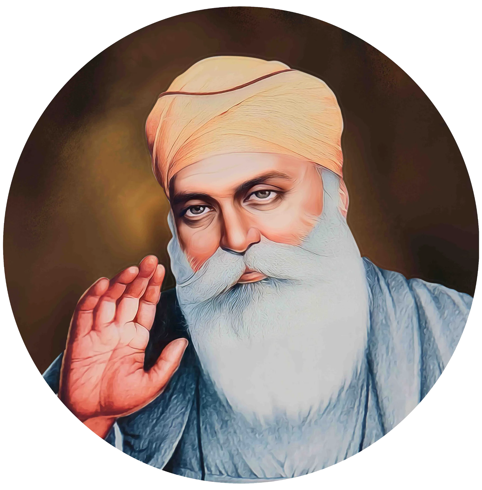

ਗੁਰੂ ਨਾਨਕ ਦੇਵ ਜੀ


ਸਿਰਲੇਖ: ਗੁਰੂ ਨਾਨਕ ਦੇਵ ਜੀ
ਸ਼੍ਰੇਣੀ: ਧਾਰਮਿਕ ਕੋਨਾ
ਕਲਾਕਾਰ: ਇਤਿਹਾਸਕ ਸ਼ਖਸੀਅਤ
ਸਾਲ: 1469 – 1539
ਸ਼੍ਰੇਣੀ: ਧਾਰਮਿਕ ਕੋਨਾ
ਕਲਾਕਾਰ: ਇਤਿਹਾਸਕ ਸ਼ਖਸੀਅਤ
ਸਾਲ: 1469 – 1539
ਗੁਰੂ ਨਾਨਕ ਦੇਵ ਜੀ
ਸਿੱਖ ਧਰਮ ਦੇ ਬਾਨੀ ਜਗਤ ਗੁਰੂ ਸ੍ਰੀ ਗੁਰੂ ਨਾਨਕ ਦੇਵ ਜੀ ਦਾ ਪ੍ਰਕਾਸ਼ 15 ਅਪ੍ਰੈਲ 1469 ਨੂੰ ਲਾਹੌਰ ਨੇੜੇ ਰਾਏ ਭੋਇ ਦੀ ਤਲਵੰਡੀ (ਮੌਜੂਦਾ ਨਨਕਾਣਾ ਸਾਹਿਬ, ਪਾਕਿਸਤਾਨ) ਵਿਖੇ ਪਿਤਾ ਮਹਿਤਾ ਕਲਿਆਣ ਦਾਸ (ਕਾਲੂ ਜੀ) ਅਤੇ ਮਾਤਾ ਤ੍ਰਿਪਤਾ ਜੀ ਦੇ ਗ੍ਰਹਿ ਵਿਖੇ ਹੋਇਆ। ਬਚਪਨ ਤੋਂ ਹੀ ਆਪ ਜੀ ਦਾ ਮਨ ਪ੍ਰਭੂ ਭਗਤੀ ਅਤੇ ਅਧਿਆਤਮਿਕ ਚਿੰਤਨ ਵਿੱਚ ਲੀਨ ਰਹਿੰਦਾ ਸੀ। ਆਪ ਜੀ ਨੇ ਸੰਸਾਰ ਭਰ ਦੇ ਪ੍ਰਮੁੱਖ ਧਾਰਮਿਕ ਕੇਂਦਰਾਂ ਦੀਆਂ ਚਾਰ ਲੰਮੀਆਂ ਯਾਤਰਾਵਾਂ (ਉਦਾਸੀਆਂ) ਕੀਤੀਆਂ, ਜਿੱਥੇ ਆਪ ਜੀ ਨੇ ਵਹਿਮਾਂ-ਭਰਮਾਂ ਅਤੇ ਕੁਰੀਤੀਆਂ ਦਾ ਖੰਡਨ ਕਰਕੇ 'ੴ' (ਇੱਕ ਓਅੰਕਾਰ) ਦਾ ਸਦੀਵੀ ਸੰਦੇਸ਼ ਦਿੱਤਾ।
ਗੁਰੂ ਨਾਨਕ ਦੇਵ ਜੀ ਨੇ ਸਮੂਹ ਮਨੁੱਖਤਾ ਨੂੰ ਇੱਕ ਪ੍ਰਭੂ ਦੇ ਬੱਚੇ ਦੱਸਦੇ ਹੋਏ ਪੂਰਨ ਬਰਾਬਰੀ, ਆਪਸੀ ਭਾਈਚਾਰੇ ਅਤੇ ਦਇਆ ਦਾ ਪ੍ਰਚਾਰ ਕੀਤਾ। ਜਾਤ-ਪਾਤ ਦੇ ਭੇਦਭਾਵ ਨੂੰ ਮਿਟਾਉਣ ਲਈ ਆਪ ਜੀ ਨੇ 'ਸੰਗਤ' ਅਤੇ 'ਪੰਗਤ' (ਲੰਗਰ) ਦੀ ਮਹਾਨ ਨੀਂਹ ਰੱਖੀ। ਆਮ ਲੋਕਾਂ ਨਾਲ ਵਿਚਾਰ ਸਾਂਝੇ ਕਰਨ ਲਈ ਆਪ ਜੀ ਨੇ ਗੁਰਮੁਖੀ ਲਿਪੀ ਨੂੰ ਪ੍ਰਚਲਿਤ ਕੀਤਾ। ਸ੍ਰੀ ਗੁਰੂ ਗ੍ਰੰਥ ਸਾਹਿਬ ਵਿੱਚ ਗੁਰੂ ਨਾਨਕ ਦੇਵ ਜੀ ਦੇ 974 ਪਾਵਨ ਸ਼ਬਦ ਦਰਜ ਹਨ। ਰਾਵੀ ਦਰਿਆ ਦੇ ਕੰਢੇ ਆਪ ਜੀ ਨੇ ਕਰਤਾਰਪੁਰ ਸਾਹਿਬ ਨਗਰ ਵਸਾਇਆ ਅਤੇ ਖ਼ੁਦ ਹੱਥੀਂ ਖੇਤੀ ਕਰਕੇ 'ਕਿਰਤ ਕਰੋ, ਨਾਮ ਜਪੋ, ਵੰਡ ਛਕੋ' ਦਾ ਜੀਵਨ ਮਾਰਗ ਸਿਖਾਇਆ। ਆਪ ਜੀ ਨੇ ਆਪਣੇ ਸੁਪੁੱਤਰਾਂ ਦੀ ਥਾਂ ਆਪਣੇ ਪਰਮ ਸ਼ਰਧਾਲੂ ਸਿੱਖ ਭਾਈ ਲਹਿਣਾ ਜੀ (ਗੁਰੂ ਅੰਗਦ ਦੇਵ ਜੀ) ਨੂੰ ਗੁਰਗੱਦੀ ਸੌਂਪੀ। 7 ਸਤੰਬਰ 1539 ਨੂੰ ਕਰਤਾਰਪੁਰ ਸਾਹਿਬ ਵਿਖੇ ਆਪ ਜੋਤੀ-ਜੋਤਿ ਸਮਾ ਗਏ।
'ਸਭ ਮਹਿ ਜੋਤਿ ਜੋਤਿ ਹੈ ਸੋਇ॥ ਤਿਸ ਦੈ ਚਾਨਣਿ ਸਭ ਮਹਿ ਚਾਨਣੁ ਹੋਇ॥'
(ਸਭਨਾਂ ਜੀਵਾਂ ਵਿੱਚ ਉਹੀ ਇੱਕ ਪਰਮਾਤਮਾ ਦੀ ਜੋਤ ਹੈ ਅਤੇ ਉਸੇ ਦੇ ਪ੍ਰਕਾਸ਼ ਨਾਲ ਸਮੁੱਚਾ ਸੰਸਾਰ ਰੌਸ਼ਨ ਹੈ।)
— ਸ੍ਰੀ ਗੁਰੂ ਗ੍ਰੰਥ ਸਾਹਿਬ (ਜਪੁਜੀ ਸਾਹਿਬ)
ਸਿੱਖ ਧਰਮ ਦੇ ਬਾਨੀ ਜਗਤ ਗੁਰੂ ਸ੍ਰੀ ਗੁਰੂ ਨਾਨਕ ਦੇਵ ਜੀ ਦਾ ਪ੍ਰਕਾਸ਼ 15 ਅਪ੍ਰੈਲ 1469 ਨੂੰ ਲਾਹੌਰ ਨੇੜੇ ਰਾਏ ਭੋਇ ਦੀ ਤਲਵੰਡੀ (ਮੌਜੂਦਾ ਨਨਕਾਣਾ ਸਾਹਿਬ, ਪਾਕਿਸਤਾਨ) ਵਿਖੇ ਪਿਤਾ ਮਹਿਤਾ ਕਲਿਆਣ ਦਾਸ (ਕਾਲੂ ਜੀ) ਅਤੇ ਮਾਤਾ ਤ੍ਰਿਪਤਾ ਜੀ ਦੇ ਗ੍ਰਹਿ ਵਿਖੇ ਹੋਇਆ। ਬਚਪਨ ਤੋਂ ਹੀ ਆਪ ਜੀ ਦਾ ਮਨ ਪ੍ਰਭੂ ਭਗਤੀ ਅਤੇ ਅਧਿਆਤਮਿਕ ਚਿੰਤਨ ਵਿੱਚ ਲੀਨ ਰਹਿੰਦਾ ਸੀ। ਆਪ ਜੀ ਨੇ ਸੰਸਾਰ ਭਰ ਦੇ ਪ੍ਰਮੁੱਖ ਧਾਰਮਿਕ ਕੇਂਦਰਾਂ ਦੀਆਂ ਚਾਰ ਲੰਮੀਆਂ ਯਾਤਰਾਵਾਂ (ਉਦਾਸੀਆਂ) ਕੀਤੀਆਂ, ਜਿੱਥੇ ਆਪ ਜੀ ਨੇ ਵਹਿਮਾਂ-ਭਰਮਾਂ ਅਤੇ ਕੁਰੀਤੀਆਂ ਦਾ ਖੰਡਨ ਕਰਕੇ 'ੴ' (ਇੱਕ ਓਅੰਕਾਰ) ਦਾ ਸਦੀਵੀ ਸੰਦੇਸ਼ ਦਿੱਤਾ।
ਗੁਰੂ ਨਾਨਕ ਦੇਵ ਜੀ ਨੇ ਸਮੂਹ ਮਨੁੱਖਤਾ ਨੂੰ ਇੱਕ ਪ੍ਰਭੂ ਦੇ ਬੱਚੇ ਦੱਸਦੇ ਹੋਏ ਪੂਰਨ ਬਰਾਬਰੀ, ਆਪਸੀ ਭਾਈਚਾਰੇ ਅਤੇ ਦਇਆ ਦਾ ਪ੍ਰਚਾਰ ਕੀਤਾ। ਜਾਤ-ਪਾਤ ਦੇ ਭੇਦਭਾਵ ਨੂੰ ਮਿਟਾਉਣ ਲਈ ਆਪ ਜੀ ਨੇ 'ਸੰਗਤ' ਅਤੇ 'ਪੰਗਤ' (ਲੰਗਰ) ਦੀ ਮਹਾਨ ਨੀਂਹ ਰੱਖੀ। ਆਮ ਲੋਕਾਂ ਨਾਲ ਵਿਚਾਰ ਸਾਂਝੇ ਕਰਨ ਲਈ ਆਪ ਜੀ ਨੇ ਗੁਰਮੁਖੀ ਲਿਪੀ ਨੂੰ ਪ੍ਰਚਲਿਤ ਕੀਤਾ। ਸ੍ਰੀ ਗੁਰੂ ਗ੍ਰੰਥ ਸਾਹਿਬ ਵਿੱਚ ਗੁਰੂ ਨਾਨਕ ਦੇਵ ਜੀ ਦੇ 974 ਪਾਵਨ ਸ਼ਬਦ ਦਰਜ ਹਨ। ਰਾਵੀ ਦਰਿਆ ਦੇ ਕੰਢੇ ਆਪ ਜੀ ਨੇ ਕਰਤਾਰਪੁਰ ਸਾਹਿਬ ਨਗਰ ਵਸਾਇਆ ਅਤੇ ਖ਼ੁਦ ਹੱਥੀਂ ਖੇਤੀ ਕਰਕੇ 'ਕਿਰਤ ਕਰੋ, ਨਾਮ ਜਪੋ, ਵੰਡ ਛਕੋ' ਦਾ ਜੀਵਨ ਮਾਰਗ ਸਿਖਾਇਆ। ਆਪ ਜੀ ਨੇ ਆਪਣੇ ਸੁਪੁੱਤਰਾਂ ਦੀ ਥਾਂ ਆਪਣੇ ਪਰਮ ਸ਼ਰਧਾਲੂ ਸਿੱਖ ਭਾਈ ਲਹਿਣਾ ਜੀ (ਗੁਰੂ ਅੰਗਦ ਦੇਵ ਜੀ) ਨੂੰ ਗੁਰਗੱਦੀ ਸੌਂਪੀ। 7 ਸਤੰਬਰ 1539 ਨੂੰ ਕਰਤਾਰਪੁਰ ਸਾਹਿਬ ਵਿਖੇ ਆਪ ਜੋਤੀ-ਜੋਤਿ ਸਮਾ ਗਏ।
'ਸਭ ਮਹਿ ਜੋਤਿ ਜੋਤਿ ਹੈ ਸੋਇ॥ ਤਿਸ ਦੈ ਚਾਨਣਿ ਸਭ ਮਹਿ ਚਾਨਣੁ ਹੋਇ॥'
(ਸਭਨਾਂ ਜੀਵਾਂ ਵਿੱਚ ਉਹੀ ਇੱਕ ਪਰਮਾਤਮਾ ਦੀ ਜੋਤ ਹੈ ਅਤੇ ਉਸੇ ਦੇ ਪ੍ਰਕਾਸ਼ ਨਾਲ ਸਮੁੱਚਾ ਸੰਸਾਰ ਰੌਸ਼ਨ ਹੈ।)
— ਸ੍ਰੀ ਗੁਰੂ ਗ੍ਰੰਥ ਸਾਹਿਬ (ਜਪੁਜੀ ਸਾਹਿਬ)
🇬🇧 English
🇮🇳 हिन्दी
ੴ ਪੰਜਾਬੀ
ਮੋਬਾਈਲ 'ਤੇ ਖੋਲ੍ਹੋ
ਆਪਣੇ ਫ਼ੋਨ 'ਤੇ ਅੰਗਰੇਜ਼ੀ, ਹਿੰਦੀ ਜਾਂ ਪੰਜਾਬੀ ਵਿੱਚ ਦੇਖਣ ਲਈ ਇਸ QR ਕੋਡ ਨੂੰ ਸਕੈਨ ਕਰੋ।